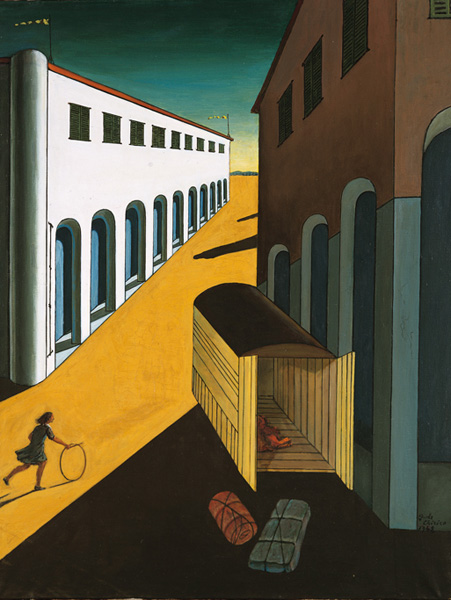

Letteratura italiana · 1920–1945
La parola
e il silenzio
L’Ermetismo non è soltanto poesia difficile. È il tentativo di salvare il peso della parola quando la lingua pubblica è occupata dalla propaganda.
Domanda generatrice: il silenzio può essere una forma di resistenza?

La catena interpretativa
Sei passaggi, un solo problema
Fonte e criterio
Una base, non una gabbia
Il percorso rielabora il documento Ermetismo: analisi e contesto storico. Dove la fonte propone interpretazioni controverse — soprattutto l’idea dell’oscurità come resistenza — la lezione distingue i fatti dalla lettura critica.